1) Fact Buddy
Write a program to keep moving a sprite at random positions and display 5 fun facts about trees.👉
Steps:
1. Click on See Inside.
View
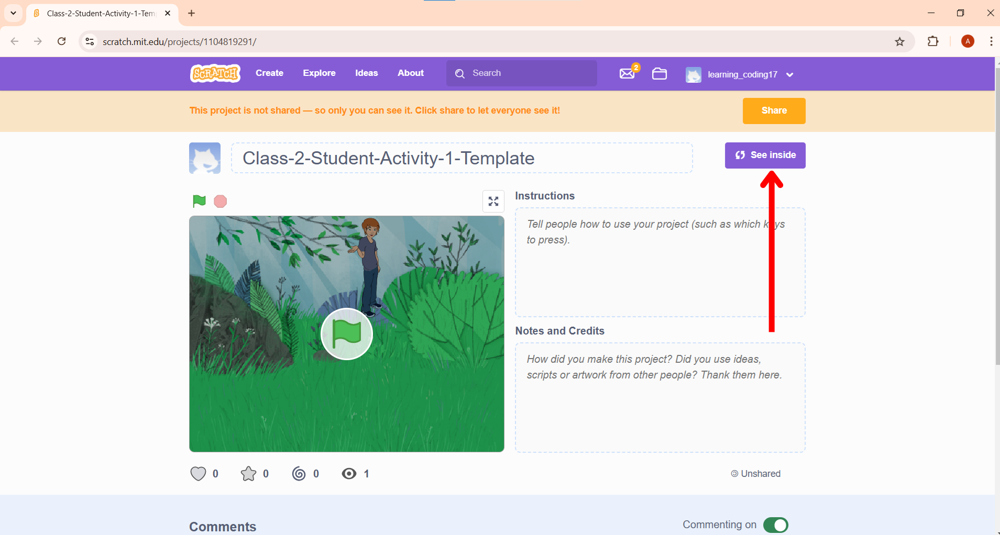
2. You can adjust the size of the sprite.
View
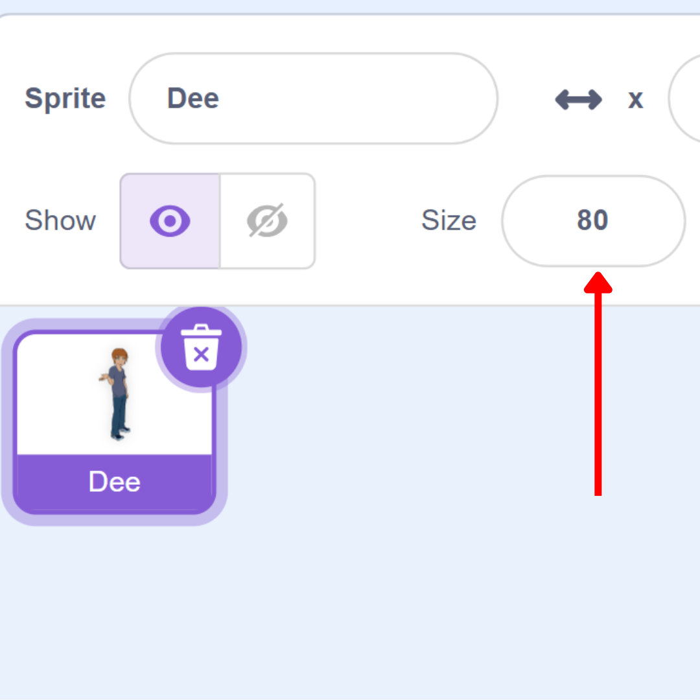
3. Select
 from
from 
View
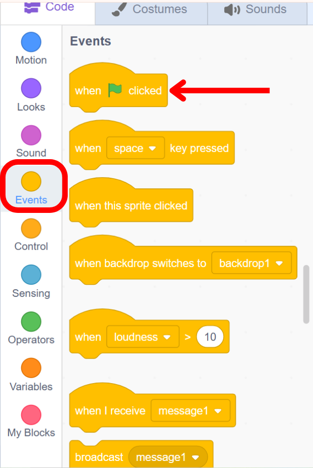
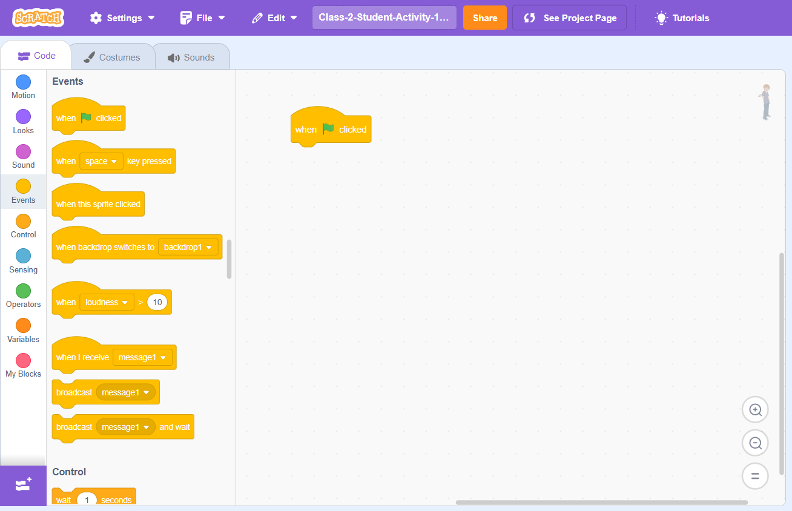
4. Select
 from
and attach it
to
from
and attach it
to
View
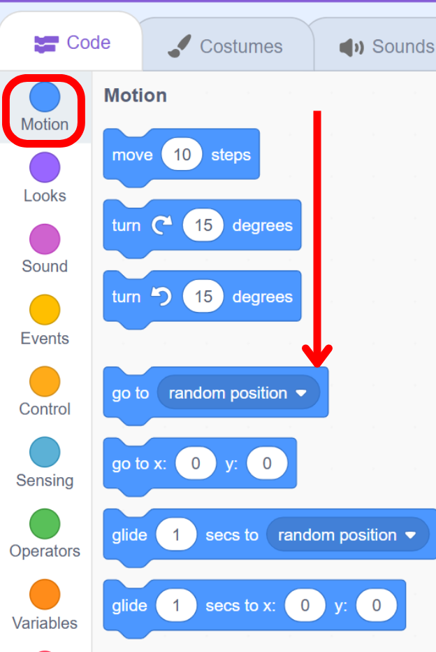
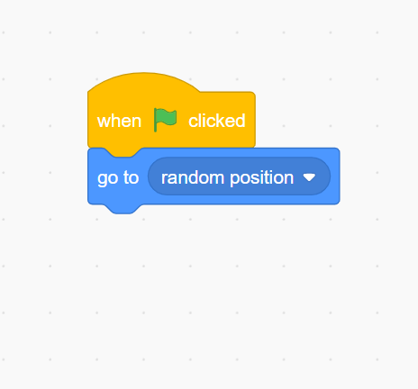
5. Select 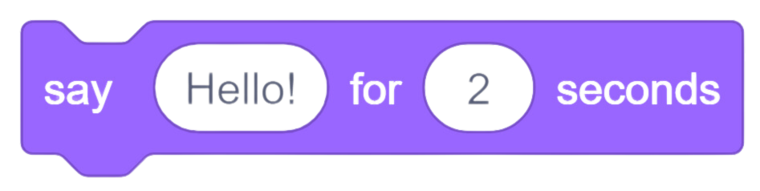 from and attach it to
View

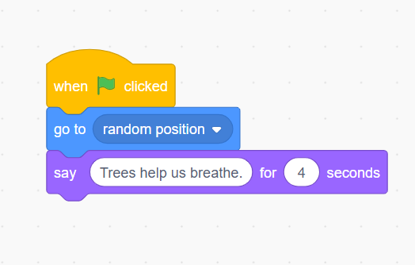
6. Keep repeating steps 7 and 8 four times.
View
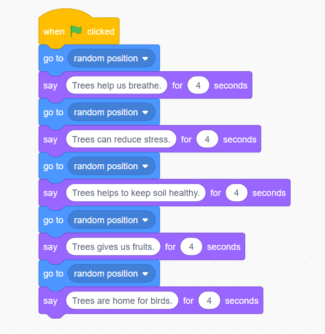
2) MOVING CAR
Imagine you are creating a car racing game. When you press the green flag the car comes to the starting line, when you press the right arrow key the car moves forward.👉
Steps:
1. The student opens the link and clicks on See Inside.
View
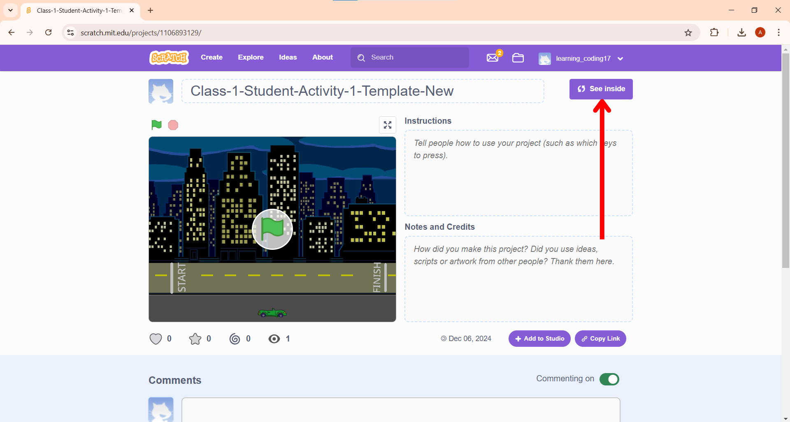
2. Select
from
.
View

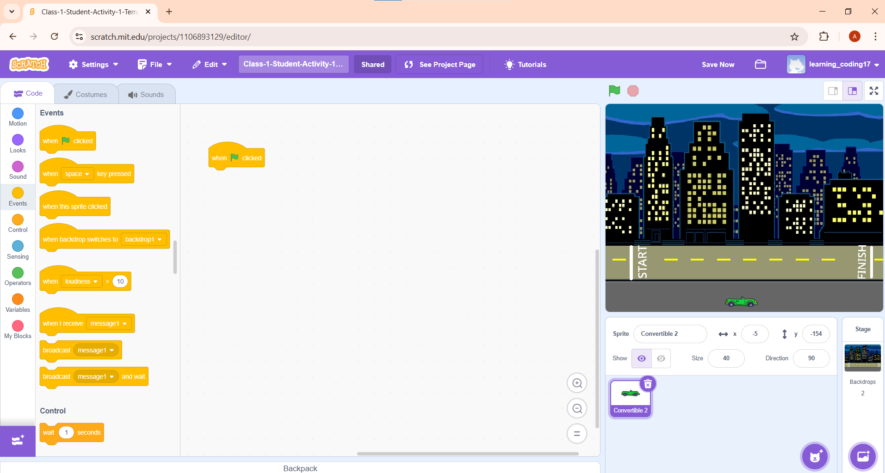
3. Select
 from
from
 and attach it to
and attach it to
Give x and y in such a way that the car comes at the starting line.
View
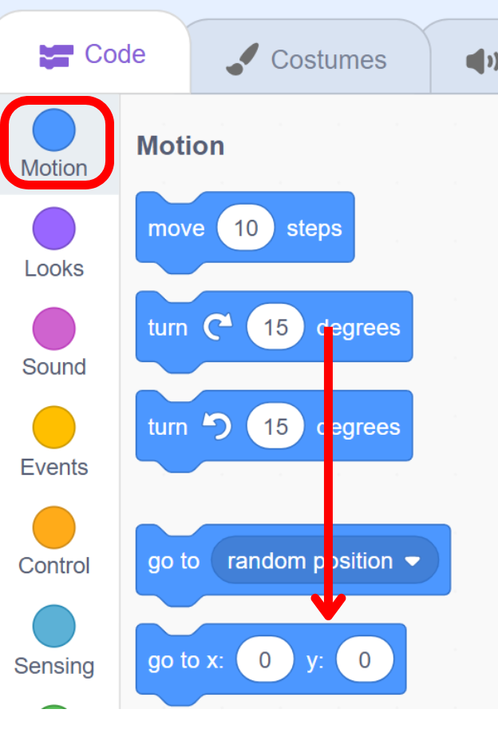
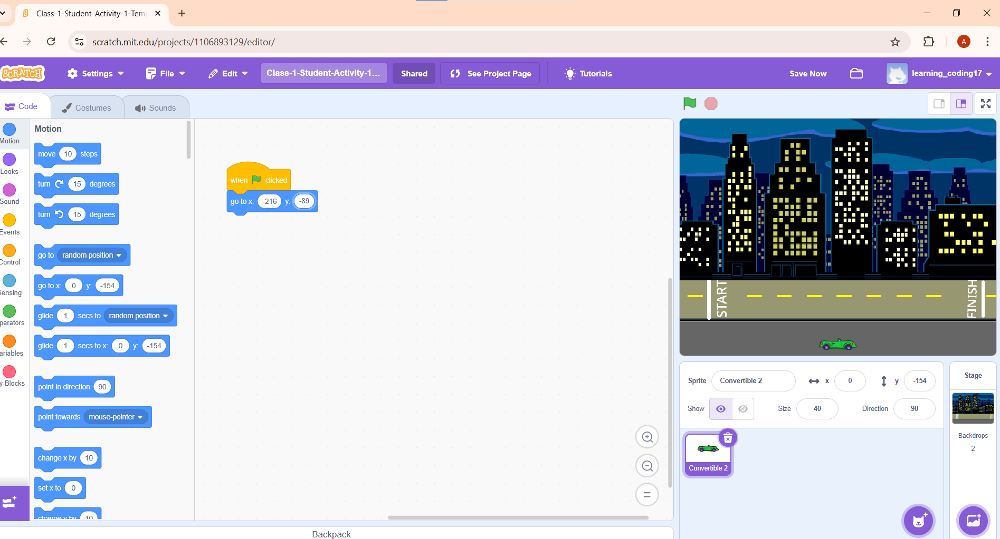
4. Select 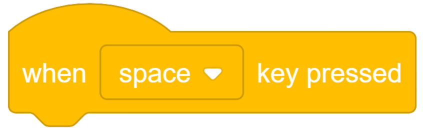 from
Select right arrow by clicking on the drop-down menu.
View

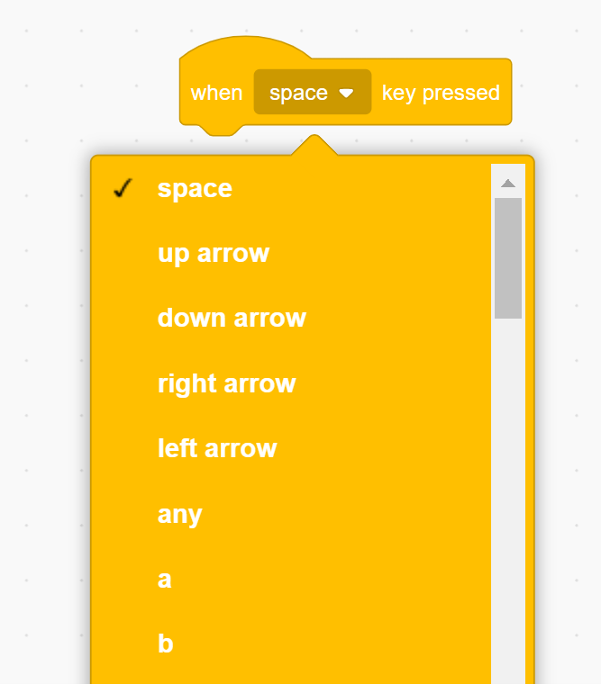

5. Select 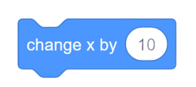 from
attach it toWhen right arrow key pressed.
View
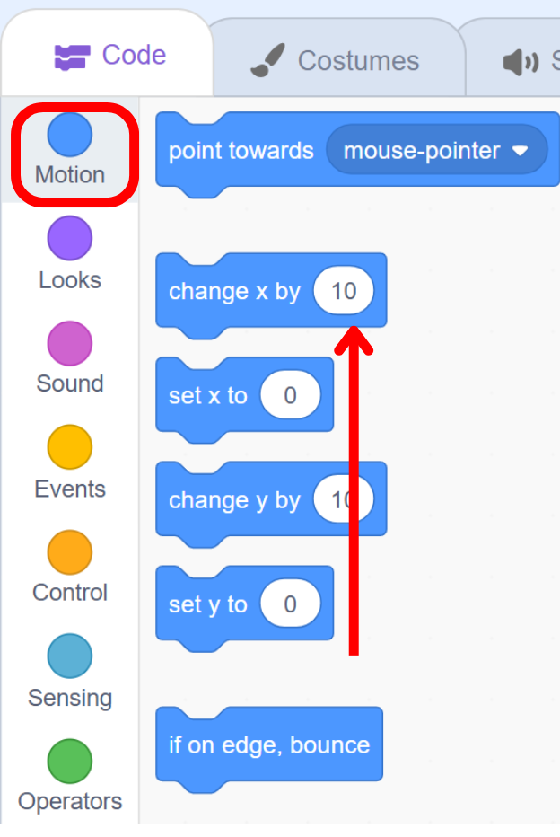
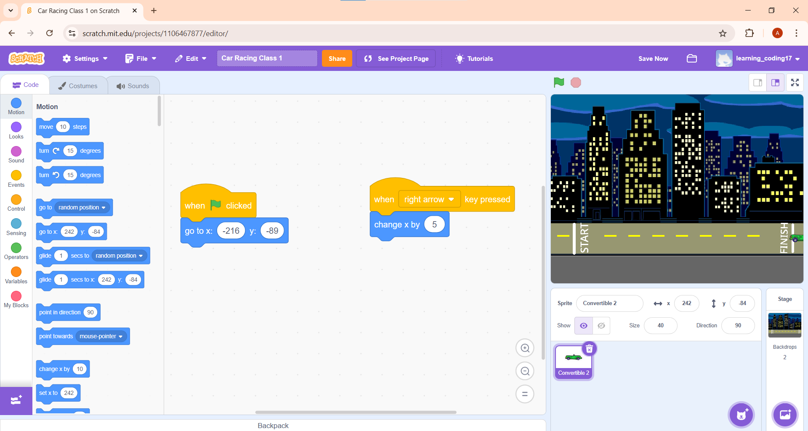
3) Moving Fish (Additional Activity)
In this activity, you will create an underwater environment with a fish moving left and right using arrow keys.👉
Steps:
1. Click on choose a backdrop.
View

2. Select Underwater 1.
View


3. Click on choose a sprite.
View

4. Select Fish Sprite.
View


5. Delete previous costumes, duplicate the fish sprite, and flip it horizontally.
View


6. Select
 from to detect left and right arrow key press. And then From the dropdown, change it left arrow and right arrow.
from to detect left and right arrow key press. And then From the dropdown, change it left arrow and right arrow.
View


7. Switch costumes based on the key press.
View

8. Select
 block from
block from  section.
section.
View


Right now it is moving beyond edges. In the coming classes, we will see how we can stop it from going beyond the edges.